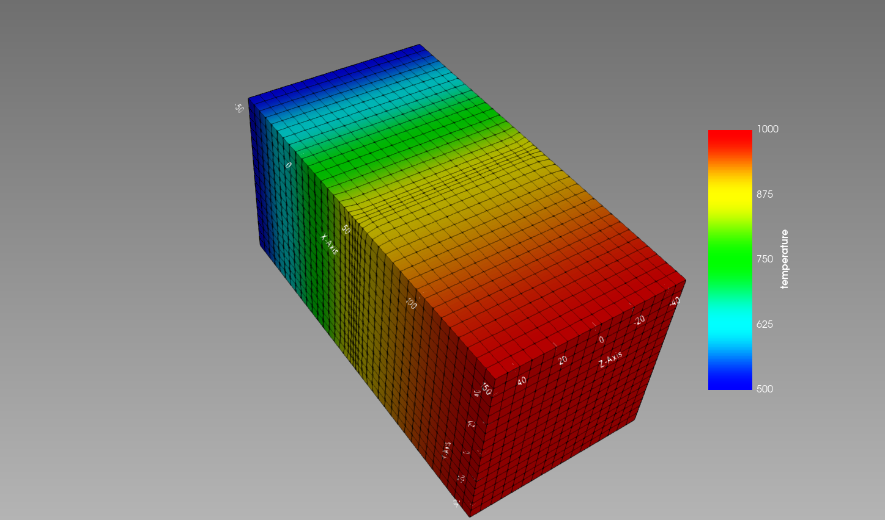
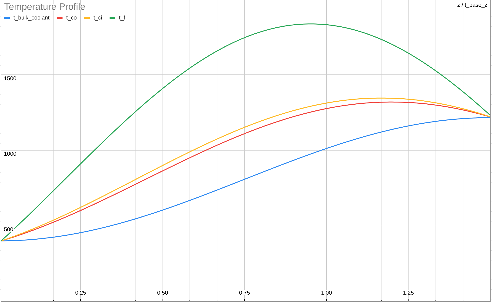

Pin Channel Heat Transfer
Objective
Developed a MOOSE application for simulating pin channel heat transfer within a nuclear assembly.
Keywords
- Finite Element Methods
- Heat Diffusion
- Neutron Diffusion
- High Performance Computing
Results
Utilized a high-performance computing library, MOOSE, to develop a simulation model to calculate the heat transfer between the nuclear assembly rod and coolant. The assembly mesh geometry was created through CUBIT to map out the coolant and fuel layout. The testing simulation is built on the supercomputer architecture, Frontera, to obtain an in-depth diffusion model. The pin-channel model can accurately simulate heat diffusion within a nuclear reactor.
The pin-channel model computes a cumulative integral over all the mesh nodes in a particular direction to obtain the temperature profiles of the coolant, cladding, and fuel.
With the temperature profiles, the pin-channel values are coupled with a neutron diffusion model to accurately predict the spread patterns of neutrons inside a nuclear assembly. With a valid simulation model, we plan to utilize a machine learning optimizer to find the optimal design parameters for the the most efficient nuclear reactor in terms of power output.